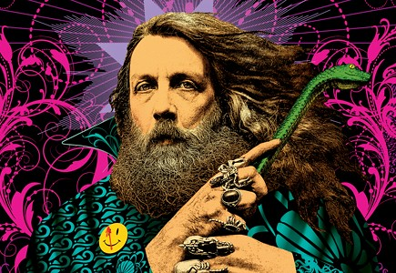

Alan Moore, (born November 18, 1953, Northampton, England), British writer whose works included some of the most influential books in comics history.
Moore entered the publishing industry in the early 1970s, working as a writer and artist for a number of independent magazines. He broke into the mainstream with stories for Doctor Who Weekly and the science-fiction anthology series 2000 AD, but his gift for deconstructing the superhero genre first appeared in 1982, when he resurrected the classic British hero Marvelman (called Miracleman in the United States) for the magazine Warrior. Moore imagined Marvelman as a middle-aged reporter who had forgotten his role as the world’s preeminent superhero, and later stories examined how an individual with godlike powers would interact with human society.
Moore’s next project, V for Vendetta (1982–86), turned the Marvelman narrative on its head, placing near-infinite power in the hands of a ruling political party (modeled on Britain’s National Front) and casting an erudite terrorist in a Guy Fawkes mask as the protagonist. In 1983 DC Comics hired Moore to write Swamp Thing, a straightforward monster comic that Moore transformed into a monthly meditation on life and death. It pushed the boundaries of what could be done in a mainstream book, and his success with it led to Watchmen. Published serially from 1986 to 1987, Watchmen helped define the term graphic novel to many readers, and its mature story line, which sampled from the dystopian visions of both Marvelman and V for Vendetta, was unlike anything that had previously been seen in the superhero genre. Watchmen’s characters were morally complex, and the climax of the story is, fundamentally, a meditation on utilitarianism within a superheroic milieu. 
Moore’s work on Marvelman, which was later continued by fellow writer Neil Gaiman, would spend subsequent years in intellectual property limbo as various parties fought over who owned the rights to the original stories as well as the rights to the later tales by Moore and Gaiman. Moore’s From Hell (originally published 1991–96), an atmospheric commentary on the declining British Empire as seen through the Jack the Ripper killings, was turned into a straightforward action film (2001) with an unlikely happy ending. This less-than-satisfactory experience with Hollywood would be repeated with The League of Extraordinary Gentlemen (first published in 1999), a clever tale that reimagined prominent literary characters of the Victorian era, such as Dracula’s Mina Murray and Dr. Jekyll’s monstrous alter ego, Mr. Hyde, as British secret agents. The film version, released in 2003, was stripped of its literary sensibility, and new characters—including a crime-fighting Tom Sawyer—were added to appeal to an American audience.
Get exclusive access to content from our 1768 First Edition with your subscription. Subscribe today Moore’s later work continued to examine the psychology of the superhero, most notably in the Image Comics title Supreme. Moore launched his own publishing imprint, America’s Best Comics, in 1999 with the flagship title Promethea. At first glance Promethea appeared to be a reimagining of Wonder Woman, but the book soon transformed into an exposition of Moore’s beliefs about Kabbala.
When film adaptations of V for Vendetta (2006) and Watchmen (2009) debuted in theatres, Moore’s name was conspicuously absent from the credits. His previous ill-fated dealings with Hollywood had convinced him that his creations could best be served by remaining on the printed page, and he requested that his name not be associated with those films.